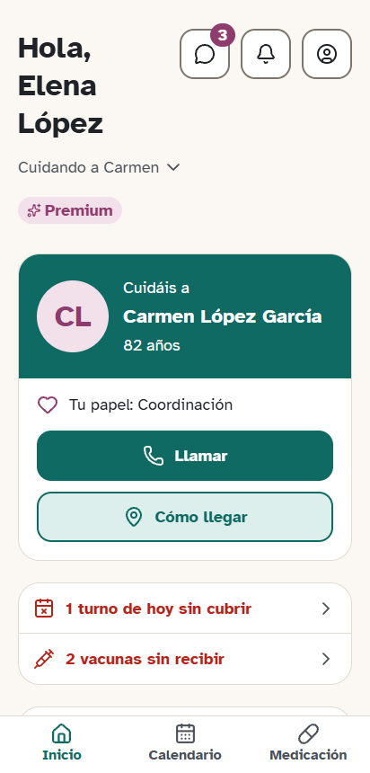

Inicio › Manual › Inicio del círculo
Inicio del círculo
Lo importante de un vistazo y el acceso a cada parte del círculo.

Arriba
• El nombre del círculo: tócalo para cambiar de círculo.
• El chat, la campana de avisos y tu perfil.
• La tarjeta de la persona cuidada, con «Llamar» y «Cómo llegar» si puedes verlos.
Avisos importantes
Si hay algo urgente (una toma sin dar, un turno de hoy sin cubrir, una caída…), sale arriba. Si hay más, lo verás en «Hoy».
Hoy
Junta todo lo de hoy: los avisos, cómo está, las tomas, los próximos turnos, lo último del diario y las novedades.
Las casillas
Cada casilla abre una parte del círculo: Ficha, Contactos, Diario, Salud, Personas, Gastos, Servicios… Solo ves las que tu papel puede usar.
Abajo están las pestañas Inicio, Calendario y Medicación.
Widget en la pantalla del móvil
Solo en el móvil
En Android puedes poner Tutelia en la pantalla de inicio: mantén pulsado un hueco, elige «Widgets» y busca Tutelia.
El widget «Tutelia» enseña tus próximos turnos y las horas de las tomas de hoy del último círculo que abriste (nunca el nombre del medicamento). Se pone al día cada vez que abres la app. Con el bloqueo con huella activado, solo dice «Abre Tutelia para verlo».
La letra crece con el tamaño de letra del móvil, sigue el modo oscuro y TalkBack la lee.
«Tutelia SOS» es para el móvil de la persona cuidada o para quien usa «Me cuido yo»: al tocarlo, Tutelia se abre con la cuenta atrás ya en marcha y, si no se cancela en 5 segundos, avisa. En otro móvil, explica para qué sirve.
En iPhone, el widget llegará más adelante. Mientras, en el móvil de la persona cuidada o con «Me cuido yo», mantén pulsado el icono de Tutelia y elige «Pedir ayuda»: empieza la misma cuenta atrás.
¿Aún no usas Tutelia?
Es gratis para organizar el día a día entre varias personas. Así se empieza.